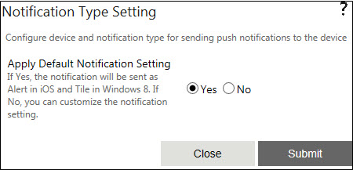

No
In Work Tasks Pro Push Notification Activity, you can configure different types of notification based on the device being used. You can choose to continue with the default notification type or customize the notification type.
To use the default notification type, set the option 'Apply Default Notification Setting' as Yes. Default notification for iOS is Alert and for Windows 8.1 it is Tile.

Configuring Custom Notification Type
The default selection for the option 'Apply Default Setting' is Yes.
Note: Push Notification activity will continue to execute successfully even after unregistering for notification from the Farm Configuration Wizard. In such cases, unpublish the workflow, unregister for notification from the Farm Configuration Wizard, and then republish the workflow.